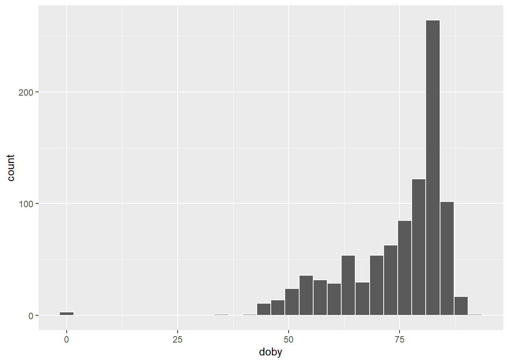
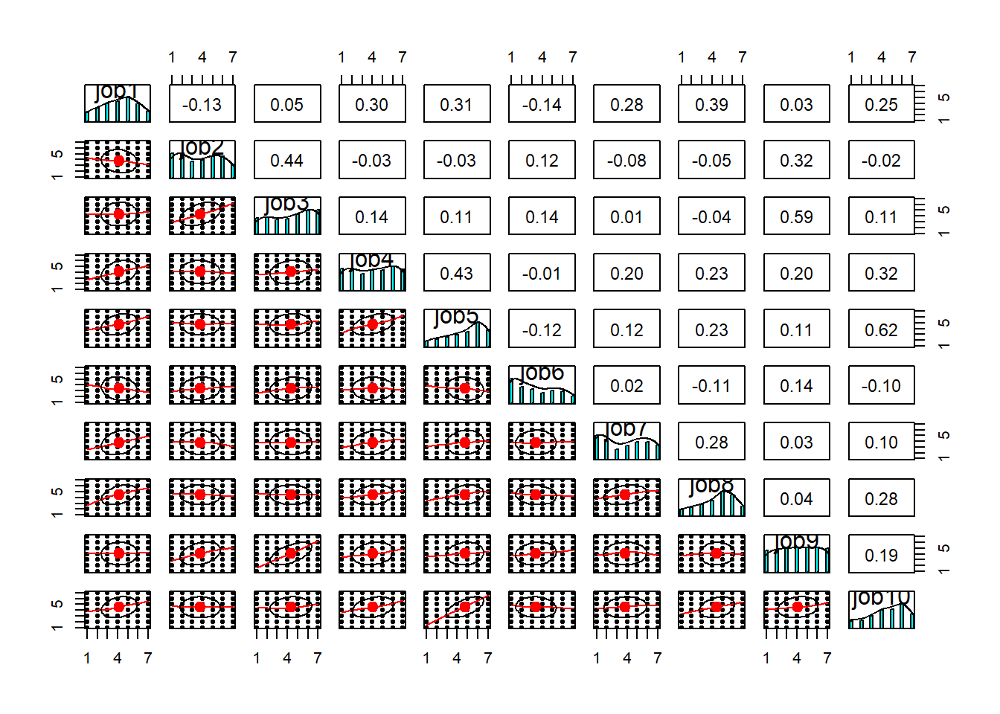
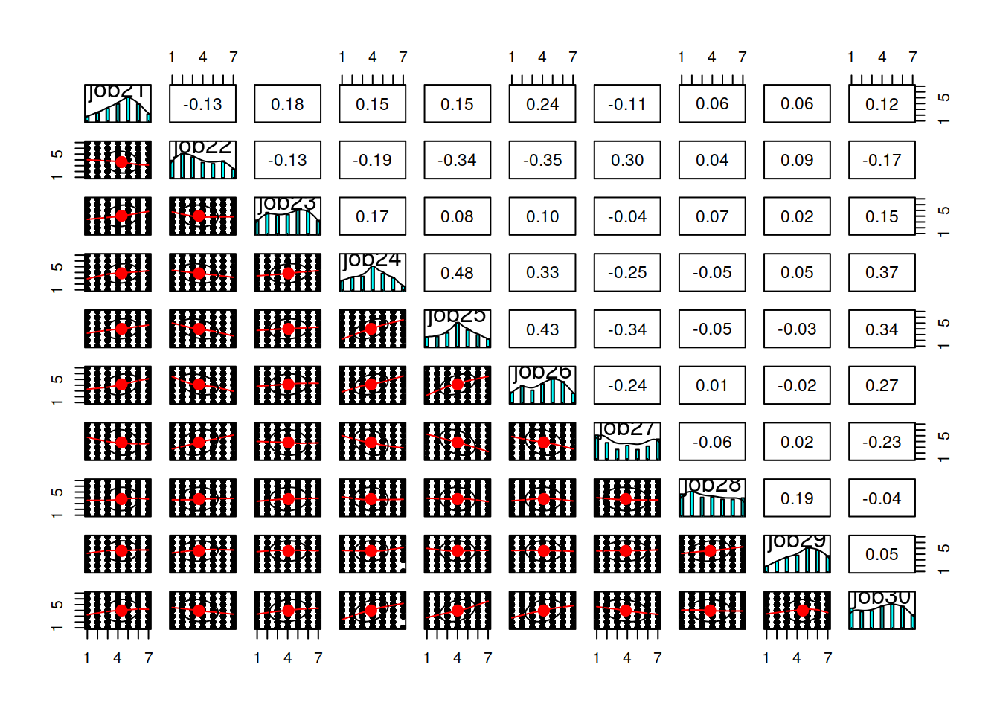
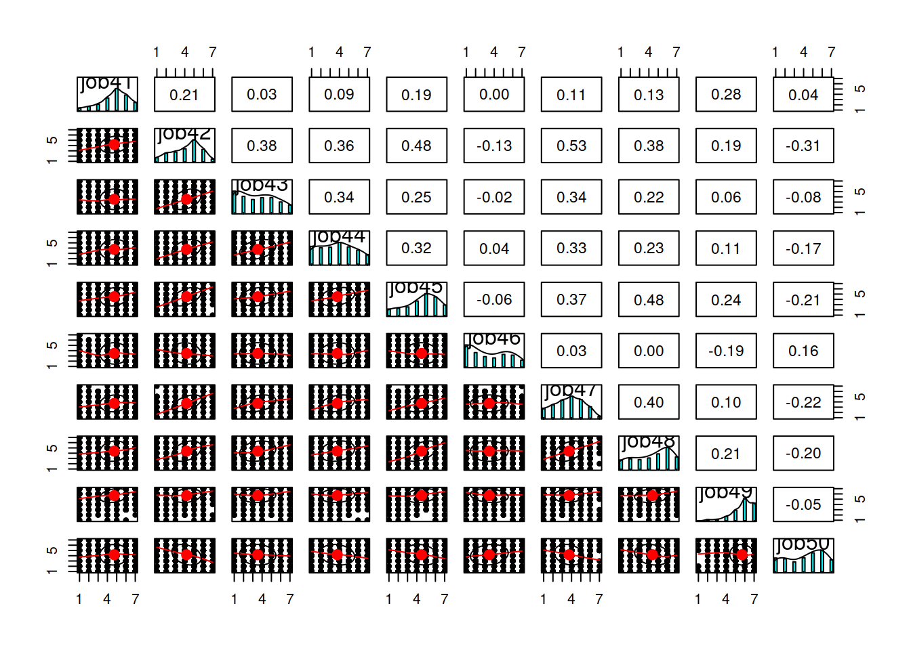
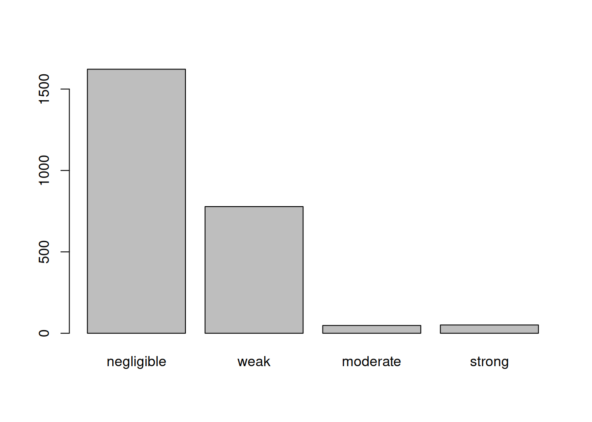
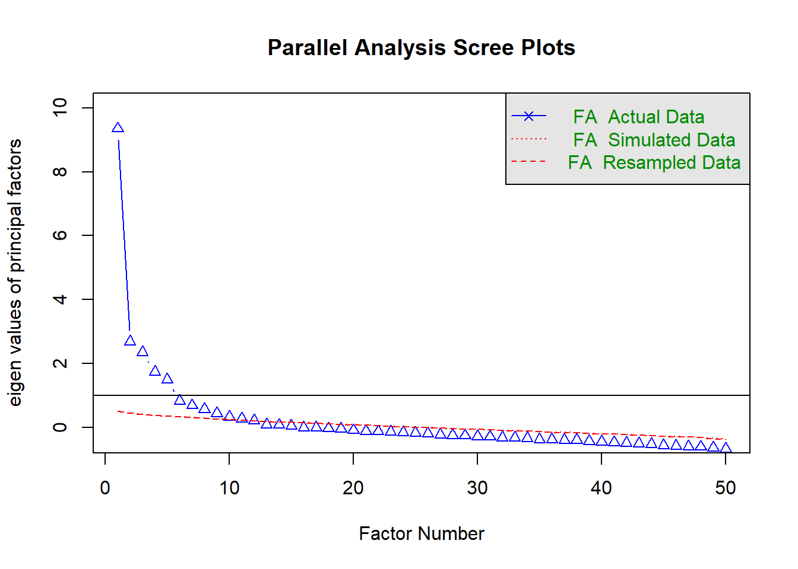
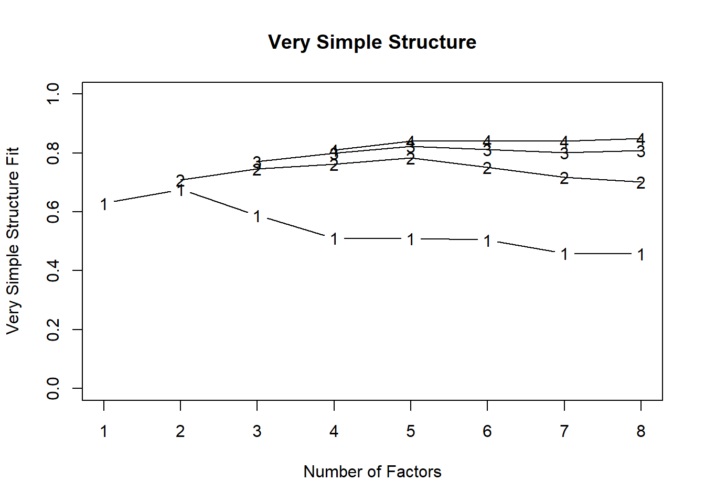
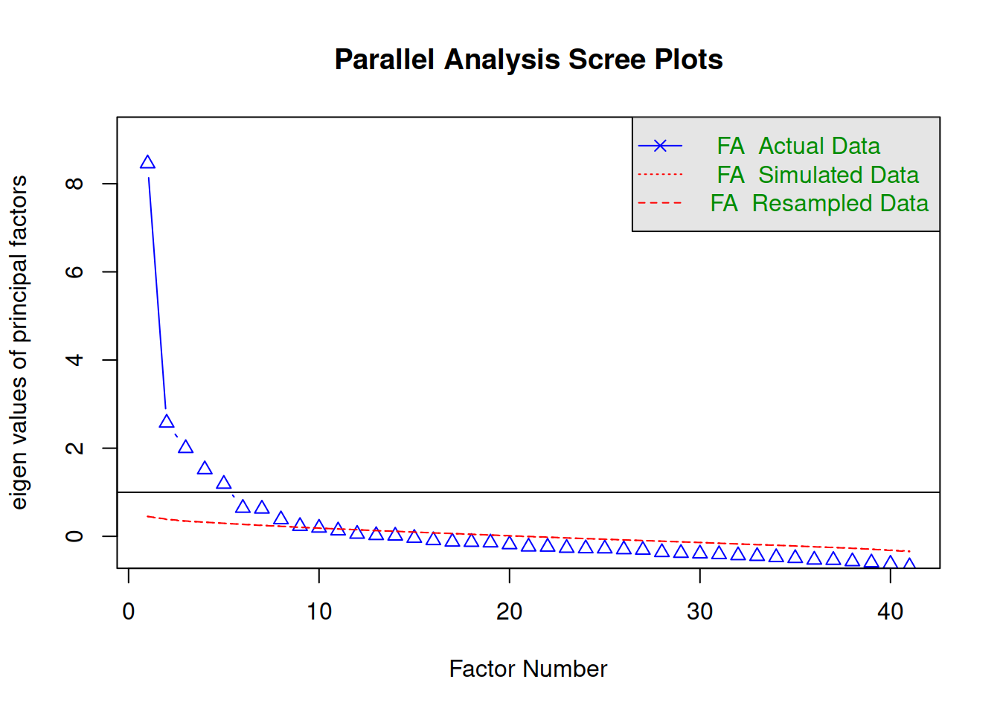
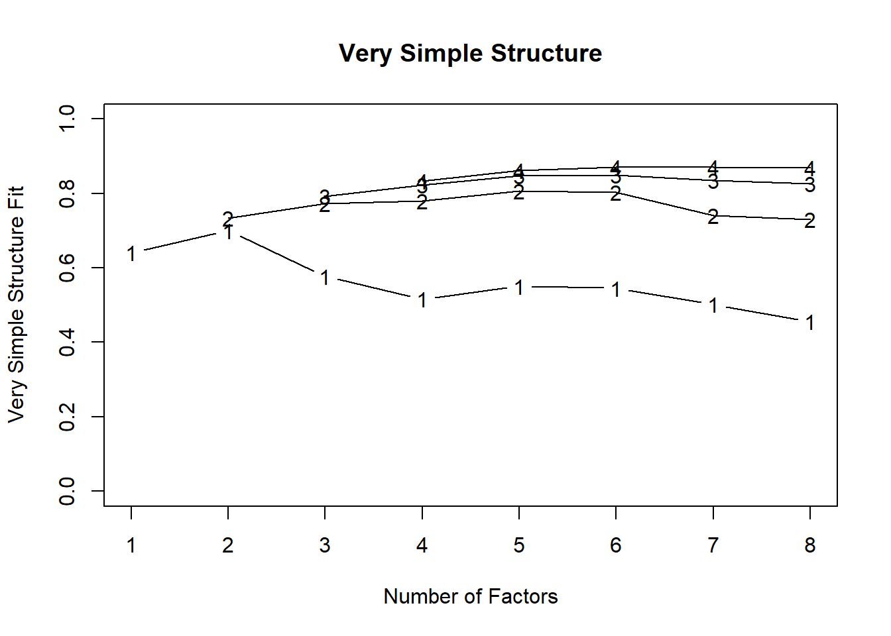

Analysis Example: Exploratory Factor Analysis
Please note that there will be only minimal explanation of the steps undertaken here, as these pages are intended as example analyses rather than additional labs readings. Please also be aware that there are many decisions to be made throughout conducting analyses, and it may be the case that you disagree with some of the choices we make here. As always with these things, it is how we justify our choices that is important. We warmly welcome any feedback and suggestions to improve these examples: please email ug.ppls.stats@ed.ac.uk.
Intro
This is a quick demonstration of one way of dealing with these tasks. It is by no means the only correct way. There is a substantial level of subjectivity in Exploratory Factor Analysis and the method involves repeated evaluation and re-evaluation of the model in light of the extracted factors and their conceptual relationships with the analysed items. In other words, a good EFA requires you to get your hands dirty.
Data: Work Pressures Survey
The Work Pressures Survey (WPS) data is available at the following link: https://uoepsy.github.io/data/WPS_data.csv.
The data contains responses from 946 workers from a variety of companies to the Work Pressures Survey. You can look at the survey taken by the study participants at the following link: https://uoepsy.github.io/data/WPS_data_codebook.pdf
We will be performing a factor analysis of the main section of this survey (Job1 to Job50).
Read in Data
Read the WPS data into R. Make sure to take a look at the variable names and data structure.
Code
library(tidyverse)
df <- read.csv("https://uoepsy.github.io/data/WPS_data.csv")
head(df) job_yrs job_mths worktype cont_hrs act_hrs gender dobm doby status youngdep
1 1 6 1 45 45 1 7 83 1 1
2 5 8 1 36 36 2 1 58 2 2
3 2 8 1 40 40 2 2 82 1 1
4 4 3 1 35 35 1 4 78 1 1
5 7 1 1 40 41 1 2 73 2 2
6 3 11 1 32 32 1 8 75 2 2
elderdep qualif exercise cigs alcohol time_rel when_rel job1 job2 job3 job4
1 1 5 4 1 1 2 1 5 4 5 4
2 1 5 2 2 0 2 2 5 7 4 3
3 1 4 6 2 0 1 1 1 4 7 1
4 2 5 3 1 2 2 1 6 4 5 5
5 1 4 2 1 3 2 1 1 1 5 5
6 2 5 6 1 4 5 2 3 4 5 3
job5 job6 job7 job8 job9 job10 job11 job12 job13 job14 job15 job16 job17
1 6 4 7 7 4 7 4 4 1 4 4 6 4
2 6 2 1 4 5 6 1 5 4 5 7 5 1
3 1 1 7 7 3 1 7 4 1 7 3 1 1
4 6 4 5 5 5 6 5 3 4 2 7 2 4
5 1 2 2 2 5 2 3 3 4 6 2 2 2
6 4 3 4 3 5 4 3 3 4 1 6 3 5
job18 job19 job20 job21 job22 job23 job24 job25 job26 job27 job28 job29 job30
1 7 7 3 4 3 5 4 4 7 2 3 3 4
2 7 1 5 1 1 1 4 5 6 4 6 3 3
3 7 7 7 7 1 2 5 6 7 1 7 5 6
4 6 7 5 5 2 4 4 5 3 2 5 7 5
5 3 2 1 1 4 6 2 3 6 6 2 5 1
6 5 6 3 3 1 3 4 2 5 5 5 6 2
job31 job32 job33 job34 job35 job36 job37 job38 job39 job40 job41 job42 job43
1 5 5 6 4 4 4 4 4 5 4 6 6 6
2 1 7 4 6 6 1 5 5 7 3 5 4 1
3 5 3 6 5 3 2 1 5 5 5 3 5 7
4 3 2 5 7 5 3 3 2 7 3 5 4 3
5 4 2 4 4 4 2 2 2 2 4 1 5 4
6 5 1 3 5 1 5 3 1 5 3 1 3 5
job44 job45 job46 job47 job48 job49 job50
1 6 6 3 3 3 6 3
2 4 6 1 4 7 5 5
3 6 7 2 5 7 5 1
4 5 7 3 5 7 6 3
5 2 6 6 1 6 2 1
6 3 3 6 3 4 2 7Variable names - Option 1:
Code
names(df) [1] "job_yrs" "job_mths" "worktype" "cont_hrs" "act_hrs" "gender"
[7] "dobm" "doby" "status" "youngdep" "elderdep" "qualif"
[13] "exercise" "cigs" "alcohol" "time_rel" "when_rel" "job1"
[19] "job2" "job3" "job4" "job5" "job6" "job7"
[25] "job8" "job9" "job10" "job11" "job12" "job13"
[31] "job14" "job15" "job16" "job17" "job18" "job19"
[37] "job20" "job21" "job22" "job23" "job24" "job25"
[43] "job26" "job27" "job28" "job29" "job30" "job31"
[49] "job32" "job33" "job34" "job35" "job36" "job37"
[55] "job38" "job39" "job40" "job41" "job42" "job43"
[61] "job44" "job45" "job46" "job47" "job48" "job49"
[67] "job50" Variable names - Option 2:
Code
colnames(df)Data structure - Option 1:
Code
str(df)'data.frame': 946 obs. of 67 variables:
$ job_yrs : int 1 5 2 4 7 3 4 4 1 0 ...
$ job_mths: num 6 8 8 3 1 11 2 0 1 11 ...
$ worktype: int 1 1 1 1 1 1 1 1 1 1 ...
$ cont_hrs: num 45 36 40 35 40 32 30 54 37 37 ...
$ act_hrs : num 45 36 40 35 41 32 30 54 37 37 ...
$ gender : int 1 2 2 1 1 1 2 1 2 2 ...
$ dobm : int 7 1 2 4 2 8 3 5 12 11 ...
$ doby : int 83 58 82 78 73 75 72 85 70 70 ...
$ status : int 1 2 1 1 2 2 2 2 2 2 ...
$ youngdep: int 1 2 1 1 2 2 2 2 2 2 ...
$ elderdep: int 1 1 1 2 1 2 1 1 1 1 ...
$ qualif : int 5 5 4 5 4 5 4 5 2 2 ...
$ exercise: int 4 2 6 3 2 6 4 3 1 3 ...
$ cigs : int 1 2 2 1 1 1 2 2 1 1 ...
$ alcohol : num 1 0 0 2 3 4 0 0 1 4 ...
$ time_rel: int 2 2 1 2 2 5 1 3 1 2 ...
$ when_rel: int 1 2 1 1 1 2 1 2 2 2 ...
$ job1 : int 5 5 1 6 1 3 5 4 6 6 ...
$ job2 : int 4 7 4 4 1 4 4 1 2 6 ...
$ job3 : int 5 4 7 5 5 5 6 7 4 7 ...
$ job4 : int 4 3 1 5 5 3 7 7 5 6 ...
$ job5 : int 6 6 1 6 1 4 5 7 4 7 ...
$ job6 : int 4 2 1 4 2 3 5 1 2 7 ...
$ job7 : int 7 1 7 5 2 4 4 5 4 6 ...
$ job8 : int 7 4 7 5 2 3 5 5 6 7 ...
$ job9 : int 4 5 3 5 5 5 6 7 2 7 ...
$ job10 : int 7 6 1 6 2 4 5 7 4 7 ...
$ job11 : int 4 1 7 5 3 3 6 1 5 7 ...
$ job12 : int 4 5 4 3 3 3 3 1 4 7 ...
$ job13 : int 1 4 1 4 4 4 4 1 5 7 ...
$ job14 : int 4 5 7 2 6 1 2 1 1 7 ...
$ job15 : int 4 7 3 7 2 6 6 7 5 5 ...
$ job16 : int 6 5 1 2 2 3 3 7 4 5 ...
$ job17 : int 4 1 1 4 2 5 3 7 3 7 ...
$ job18 : int 7 7 7 6 3 5 5 3 6 2 ...
$ job19 : int 7 1 7 7 2 6 7 3 6 2 ...
$ job20 : int 3 5 7 5 1 3 7 6 3 3 ...
$ job21 : int 4 1 7 5 1 3 3 1 5 6 ...
$ job22 : int 3 1 1 2 4 1 2 1 2 6 ...
$ job23 : int 5 1 2 4 6 3 6 1 5 7 ...
$ job24 : int 4 4 5 4 2 4 4 4 5 6 ...
$ job25 : int 4 5 6 5 3 2 3 7 5 4 ...
$ job26 : int 7 6 7 3 6 5 6 7 6 4 ...
$ job27 : int 2 4 1 2 6 5 1 1 3 7 ...
$ job28 : int 3 6 7 5 2 5 6 1 4 7 ...
$ job29 : int 3 3 5 7 5 6 5 1 3 7 ...
$ job30 : int 4 3 6 5 1 2 3 6 6 4 ...
$ job31 : int 5 1 5 3 4 5 4 1 5 5 ...
$ job32 : int 5 7 3 2 2 1 3 2 6 5 ...
$ job33 : int 6 4 6 5 4 3 7 4 6 4 ...
$ job34 : int 4 6 5 7 4 5 6 1 5 5 ...
$ job35 : int 4 6 3 5 4 1 3 1 5 6 ...
$ job36 : int 4 1 2 3 2 5 2 1 5 6 ...
$ job37 : int 4 5 1 3 2 3 3 7 3 6 ...
$ job38 : int 4 5 5 2 2 1 3 1 3 7 ...
$ job39 : int 5 7 5 7 2 5 6 7 6 5 ...
$ job40 : int 4 3 5 3 4 3 3 7 3 6 ...
$ job41 : int 6 5 3 5 1 1 3 1 5 7 ...
$ job42 : int 6 4 5 4 5 3 4 1 4 5 ...
$ job43 : int 6 1 7 3 4 5 1 2 3 7 ...
$ job44 : int 6 4 6 5 2 3 7 1 5 7 ...
$ job45 : int 6 6 7 7 6 3 6 7 6 7 ...
$ job46 : int 3 1 2 3 6 6 3 7 3 5 ...
$ job47 : int 3 4 5 5 1 3 3 3 3 6 ...
$ job48 : int 3 7 7 7 6 4 6 7 5 6 ...
$ job49 : int 6 5 5 6 2 2 5 2 6 7 ...
$ job50 : int 3 5 1 3 1 7 4 1 5 6 ...Data structure - Option 2:
Code
glimpse(df)Rows: 946
Columns: 67
$ job_yrs <int> 1, 5, 2, 4, 7, 3, 4, 4, 1, 0, 2, 2, 11, 4, 1, 2, 1, 0, 1, 0, …
$ job_mths <dbl> 6, 8, 8, 3, 1, 11, 2, 0, 1, 11, 0, 5, 1, 2, 10, 10, 4, 3, 0, …
$ worktype <int> 1, 1, 1, 1, 1, 1, 1, 1, 1, 1, 1, 1, 1, 1, 1, 1, 1, 1, 1, 2, 1…
$ cont_hrs <dbl> 45.0, 36.0, 40.0, 35.0, 40.0, 32.0, 30.0, 54.0, 37.0, 37.0, 3…
$ act_hrs <dbl> 45.0, 36.0, 40.0, 35.0, 41.0, 32.0, 30.0, 54.0, 37.0, 37.0, 3…
$ gender <int> 1, 2, 2, 1, 1, 1, 2, 1, 2, 2, 2, 1, 1, 1, 2, 1, 2, 2, 2, 2, 1…
$ dobm <int> 7, 1, 2, 4, 2, 8, 3, 5, 12, 11, 1, 12, 11, 3, 6, 6, 3, 5, 3, …
$ doby <int> 83, 58, 82, 78, 73, 75, 72, 85, 70, 70, 77, 77, 74, 68, 88, 8…
$ status <int> 1, 2, 1, 1, 2, 2, 2, 2, 2, 2, 2, 2, 1, 2, 1, 1, 1, 2, 1, 1, 2…
$ youngdep <int> 1, 2, 1, 1, 2, 2, 2, 2, 2, 2, 2, 1, 1, 1, 1, 1, 1, 1, 1, 1, 2…
$ elderdep <int> 1, 1, 1, 2, 1, 2, 1, 1, 1, 1, 1, 1, 1, 1, 1, 1, 1, 1, 1, 1, 1…
$ qualif <int> 5, 5, 4, 5, 4, 5, 4, 5, 2, 2, 2, 3, 2, 5, 2, 1, 1, 2, 3, 5, 2…
$ exercise <int> 4, 2, 6, 3, 2, 6, 4, 3, 1, 3, 3, 2, 4, 1, 4, 3, 3, 4, 5, 2, 4…
$ cigs <int> 1, 2, 2, 1, 1, 1, 2, 2, 1, 1, 1, 2, 1, 2, 1, 2, 2, 2, 2, 2, 4…
$ alcohol <dbl> 1, 0, 0, 2, 3, 4, 0, 0, 1, 4, 0, 10, 40, 30, 10, 0, 15, 0, 15…
$ time_rel <int> 2, 2, 1, 2, 2, 5, 1, 3, 1, 2, 3, 2, 2, 1, 2, 4, 2, 3, 1, 2, 3…
$ when_rel <int> 1, 2, 1, 1, 1, 2, 1, 2, 2, 2, 2, 2, 1, 1, 2, 4, 2, 1, 2, 1, 1…
$ job1 <int> 5, 5, 1, 6, 1, 3, 5, 4, 6, 6, 5, 5, 4, 6, 4, 5, 5, 5, 4, 5, 5…
$ job2 <int> 4, 7, 4, 4, 1, 4, 4, 1, 2, 6, 3, 2, 3, 2, 1, 2, 4, 6, 4, 5, 3…
$ job3 <int> 5, 4, 7, 5, 5, 5, 6, 7, 4, 7, 1, 4, 3, 2, 4, 3, 1, 6, 3, 5, 6…
$ job4 <int> 4, 3, 1, 5, 5, 3, 7, 7, 5, 6, 7, 7, 3, 6, 6, 6, 6, 6, 4, 3, 2…
$ job5 <int> 6, 6, 1, 6, 1, 4, 5, 7, 4, 7, 6, 6, 6, 6, 6, 6, 4, 6, 4, 6, 5…
$ job6 <int> 4, 2, 1, 4, 2, 3, 5, 1, 2, 7, 2, 2, 1, 1, 1, 2, 1, 2, 1, 2, 1…
$ job7 <int> 7, 1, 7, 5, 2, 4, 4, 5, 4, 6, 5, 6, 5, 7, 4, 4, 7, 5, 6, 7, 7…
$ job8 <int> 7, 4, 7, 5, 2, 3, 5, 5, 6, 7, 7, 6, 4, 6, 5, 4, 6, 6, 5, 3, 6…
$ job9 <int> 4, 5, 3, 5, 5, 5, 6, 7, 2, 7, 3, 4, 6, 2, 1, 2, 1, 5, 2, 6, 3…
$ job10 <int> 7, 6, 1, 6, 2, 4, 5, 7, 4, 7, 6, 6, 6, 6, 6, 4, 4, 5, 5, 6, 4…
$ job11 <int> 4, 1, 7, 5, 3, 3, 6, 1, 5, 7, 3, 5, 5, 6, 6, 4, 5, 5, 6, 4, 6…
$ job12 <int> 4, 5, 4, 3, 3, 3, 3, 1, 4, 7, 4, 2, 1, 4, 2, 2, 2, 2, 2, 2, 2…
$ job13 <int> 1, 4, 1, 4, 4, 4, 4, 1, 5, 7, 3, 4, 2, 7, 1, 4, 2, 4, 4, 6, 4…
$ job14 <int> 4, 5, 7, 2, 6, 1, 2, 1, 1, 7, 7, 6, 4, 6, 4, 4, 7, 4, 6, 6, 4…
$ job15 <int> 4, 7, 3, 7, 2, 6, 6, 7, 5, 5, 4, 4, 7, 6, 3, 5, 5, 4, 4, 3, 5…
$ job16 <int> 6, 5, 1, 2, 2, 3, 3, 7, 4, 5, 6, 6, 6, 6, 5, 4, 4, 6, 5, 6, 3…
$ job17 <int> 4, 1, 1, 4, 2, 5, 3, 7, 3, 7, 2, 2, 3, 2, 1, 2, 2, 2, 1, 2, 3…
$ job18 <int> 7, 7, 7, 6, 3, 5, 5, 3, 6, 2, 3, 5, 5, 6, 5, 5, 6, 6, 4, 5, 3…
$ job19 <int> 7, 1, 7, 7, 2, 6, 7, 3, 6, 2, 1, 2, 2, 6, 1, 5, 5, 6, 2, 2, 2…
$ job20 <int> 3, 5, 7, 5, 1, 3, 7, 6, 3, 3, 4, 3, 3, 4, 3, 6, 1, 5, 3, 6, 5…
$ job21 <int> 4, 1, 7, 5, 1, 3, 3, 1, 5, 6, 3, 5, 5, 6, 4, 4, 3, 5, 4, 2, 5…
$ job22 <int> 3, 1, 1, 2, 4, 1, 2, 1, 2, 6, 2, 5, 2, 2, 1, 6, 1, 5, 3, 5, 3…
$ job23 <int> 5, 1, 2, 4, 6, 3, 6, 1, 5, 7, 2, 5, 6, 4, 4, 2, 4, 5, 5, 6, 6…
$ job24 <int> 4, 4, 5, 4, 2, 4, 4, 4, 5, 6, 4, 6, 4, 2, 3, 6, 5, 6, 5, 4, 2…
$ job25 <int> 4, 5, 6, 5, 3, 2, 3, 7, 5, 4, 5, 5, 5, 3, 4, 6, 4, 6, 4, 6, 3…
$ job26 <int> 7, 6, 7, 3, 6, 5, 6, 7, 6, 4, 1, 5, 6, 6, 4, 6, 4, 4, 5, 4, 4…
$ job27 <int> 2, 4, 1, 2, 6, 5, 1, 1, 3, 7, 6, 3, 1, 1, 1, 2, 2, 4, 6, 6, 2…
$ job28 <int> 3, 6, 7, 5, 2, 5, 6, 1, 4, 7, 3, 3, 5, 1, 3, 4, 1, 3, 2, 6, 5…
$ job29 <int> 3, 3, 5, 7, 5, 6, 5, 1, 3, 7, 4, 4, 3, 2, 2, 4, 3, 3, 5, 5, 3…
$ job30 <int> 4, 3, 6, 5, 1, 2, 3, 6, 6, 4, 7, 6, 4, 4, 3, 4, 4, 6, 4, 2, 3…
$ job31 <int> 5, 1, 5, 3, 4, 5, 4, 1, 5, 5, 5, 3, 4, 6, 5, 6, 6, 6, 5, 4, 2…
$ job32 <int> 5, 7, 3, 2, 2, 1, 3, 2, 6, 5, 5, 5, 4, 7, 5, 5, 5, 6, 5, 5, 5…
$ job33 <int> 6, 4, 6, 5, 4, 3, 7, 4, 6, 4, 6, 3, 4, 2, 3, 6, 6, 6, 4, 2, 2…
$ job34 <int> 4, 6, 5, 7, 4, 5, 6, 1, 5, 5, 2, 2, 2, 2, 3, 5, 5, 5, 1, 2, 4…
$ job35 <int> 4, 6, 3, 5, 4, 1, 3, 1, 5, 6, 5, 5, 4, 6, 5, 4, 5, 5, 7, 5, 6…
$ job36 <int> 4, 1, 2, 3, 2, 5, 2, 1, 5, 6, 5, 3, 4, 6, 5, 6, 6, 5, 7, 5, 5…
$ job37 <int> 4, 5, 1, 3, 2, 3, 3, 7, 3, 6, 7, 4, 6, 7, 4, 5, 6, 5, 6, 5, 5…
$ job38 <int> 4, 5, 5, 2, 2, 1, 3, 1, 3, 7, 7, 5, 6, 7, 3, 6, 6, 5, 6, 5, 5…
$ job39 <int> 5, 7, 5, 7, 2, 5, 6, 7, 6, 5, 4, 5, 6, 7, 3, 5, 5, 5, 2, 1, 4…
$ job40 <int> 4, 3, 5, 3, 4, 3, 3, 7, 3, 6, 3, 5, 6, 7, 4, 4, 6, 6, 4, 6, 1…
$ job41 <int> 6, 5, 3, 5, 1, 1, 3, 1, 5, 7, 3, 5, 5, 6, 4, 5, 7, 6, 5, 6, 5…
$ job42 <int> 6, 4, 5, 4, 5, 3, 4, 1, 4, 5, 4, 6, 5, 7, 4, 5, 5, 6, 4, 3, 5…
$ job43 <int> 6, 1, 7, 3, 4, 5, 1, 2, 3, 7, 2, 6, 4, 6, 5, 4, 7, 6, 2, 6, 4…
$ job44 <int> 6, 4, 6, 5, 2, 3, 7, 1, 5, 7, 7, 6, 4, 5, 6, 5, 6, 6, 6, 5, 3…
$ job45 <int> 6, 6, 7, 7, 6, 3, 6, 7, 6, 7, 5, 4, 6, 6, 5, 6, 4, 6, 4, 2, 6…
$ job46 <int> 3, 1, 2, 3, 6, 6, 3, 7, 3, 5, 5, 2, 2, 2, 1, 2, 2, 5, 1, 1, 2…
$ job47 <int> 3, 4, 5, 5, 1, 3, 3, 3, 3, 6, 5, 5, 4, 4, 3, 6, 5, 5, 4, 4, 3…
$ job48 <int> 3, 7, 7, 7, 6, 4, 6, 7, 5, 6, 5, 3, 6, 3, 4, 5, 4, 5, 3, 1, 6…
$ job49 <int> 6, 5, 5, 6, 2, 2, 5, 2, 6, 7, 5, 3, 6, 6, 7, 6, 7, 6, 6, 6, 7…
$ job50 <int> 3, 5, 1, 3, 1, 7, 4, 1, 5, 6, 5, 4, 4, 5, 1, 2, 5, 3, 4, 5, 7…Sanity Checks
Produce a table of summary statistics for the variables in the data.
Code
df %>%
summarise(across(everything(),
list(M = mean, SD = sd, MIN = min, MAX = max))) %>%
pivot_longer(everything())# A tibble: 268 × 2
name value
<chr> <dbl>
1 job_yrs_M 4.03
2 job_yrs_SD 5.86
3 job_yrs_MIN -1
4 job_yrs_MAX 37
5 job_mths_M NA
6 job_mths_SD NA
7 job_mths_MIN NA
8 job_mths_MAX NA
9 worktype_M 1.24
10 worktype_SD 0.427
# … with 258 more rowsWe can see that there are a few missing values in some variables.
If you were to analyse this data for a research project hopefully leading to a paper, you would probably want to perform sanity check on the variables, such as check if everyone is an adult (assuming this was a requirement for partaking of the study).
Check whether all participants in the study are adults.
Code
unique(df$doby) [1] 83 58 82 78 73 75 72 85 70 77 74 68 88 81 90
[16] 59 89 87 80 86 84 67 79 55 71 56 57 62 61 91
[31] 52 63 69 60 53 76 50 49 64 NA 54 0 66 35 65
[46] 47 48 45 51 46 1979 1982 1980 1975 1969 1981 1973 1946 -1 43
[61] 44 42 1971 1976 1983 1965 1985 1955 1950 1974 1984The data look like a bit of a mess.. Some participants have the full year of birth, some only the last 2 digits. Let’s only extract the last 2 digits from all rows then.
Let’s use the str_sub() function to take only the last 2 characters.
Code
df <- df %>%
mutate(doby = str_sub(doby, -2, -1))It seems like it’s now a character rather than a number:
Code
class(df$doby)[1] "character"Let’s make it a number again:
Code
df$doby <- as.numeric(df$doby)Visualise the distribution of birth year. Do we notice anything strange?
Code
ggplot(df, aes(x = doby)) +
geom_histogram(color = 'white')
Or a dotplot if you prefer:
Code
ggplot(df, aes(x = doby)) +
geom_dotplot(dotsize = 0.6, binwidth = 1, fill = 'dodgerblue', color = NA)
A year of birth equal to −1 doesn’t make any sense and, since we only want to keep adults, we will remove the rows in the data set having a year of birth equal to -1.
In the meantime, we will also remove those participants who don’t have a value for doby.
Code
df <- df %>%
filter(!is.na(doby) | doby > 0)
hist(df$doby)
That looks much better!
Normally, you’d want to check other variables too. For now, because we are focusing on EFA, we’ll just assume that the other variables are okay.
Subset
Remember that the only variables we are interested in for our EFA are the job1 to job50 variables. We need to subset the data set to only include those variables.
Code
df <- df %>%
select(job1:job50)Create a table of descriptive summary statistics for each variable.
Code
library(psych)
describe(df) vars n mean sd median trimmed mad min max range skew kurtosis se
job1 1 943 4.20 2.43 4 4.18 1.48 -1 55 56 9.62 201.28 0.08
job2 2 943 3.76 2.00 4 3.71 2.97 -1 7 8 0.07 -1.29 0.06
job3 3 943 4.33 2.05 5 4.41 2.97 -1 7 8 -0.24 -1.24 0.07
job4 4 943 4.05 2.04 4 4.06 2.97 -1 7 8 -0.08 -1.29 0.07
job5 5 943 4.77 2.11 5 4.89 1.48 0 36 36 3.05 49.63 0.07
job6 6 943 3.38 2.00 3 3.25 2.97 1 7 6 0.34 -1.20 0.07
job7 7 943 3.79 2.13 4 3.74 2.97 -1 7 8 0.04 -1.38 0.07
job8 8 943 4.47 1.72 5 4.55 1.48 -1 7 8 -0.47 -0.66 0.06
job9 9 943 4.06 1.99 4 4.08 2.97 -1 7 8 -0.06 -1.18 0.06
job10 10 943 4.52 1.80 5 4.63 1.48 0 7 7 -0.44 -0.81 0.06
job11 11 943 4.68 1.78 5 4.81 1.48 1 7 6 -0.60 -0.69 0.06
job12 12 943 3.67 2.03 4 3.59 2.97 0 7 7 0.21 -1.25 0.07
job13 13 943 3.76 1.94 4 3.71 2.97 -1 7 8 0.10 -1.15 0.06
job14 14 943 4.77 2.45 5 4.88 1.48 1 52 51 7.34 144.84 0.08
job15 15 943 3.91 1.91 4 3.89 2.97 -1 14 15 0.08 -0.34 0.06
job16 16 943 4.11 1.77 4 4.17 1.48 -1 7 8 -0.23 -0.97 0.06
job17 17 943 3.73 1.97 3 3.66 2.97 1 7 6 0.18 -1.27 0.06
job18 18 943 4.20 1.79 5 4.26 1.48 -1 7 8 -0.29 -0.97 0.06
job19 19 943 2.83 1.89 2 2.61 1.48 -1 7 8 0.73 -0.67 0.06
job20 20 943 4.02 1.98 4 4.03 2.97 -1 7 8 -0.07 -1.15 0.06
job21 21 943 4.35 1.66 5 4.42 1.48 -1 7 8 -0.40 -0.50 0.05
job22 22 943 3.60 1.90 3 3.54 1.48 -1 7 8 0.24 -1.11 0.06
job23 23 943 4.06 1.88 4 4.08 2.97 -1 7 8 -0.10 -1.15 0.06
job24 24 943 3.83 1.69 4 3.86 1.48 -1 7 8 -0.11 -0.76 0.06
job25 25 943 3.97 1.77 4 3.99 1.48 -1 7 8 -0.15 -0.65 0.06
job26 26 943 4.13 1.81 4 4.17 2.97 0 7 7 -0.20 -1.07 0.06
job27 27 943 3.84 2.22 4 3.80 2.97 1 7 6 0.11 -1.45 0.07
job28 28 943 3.79 2.02 4 3.74 2.97 1 7 6 0.16 -1.26 0.07
job29 29 943 4.55 1.76 5 4.63 1.48 -1 7 8 -0.38 -0.80 0.06
job30 30 943 3.99 1.92 4 3.98 2.97 1 7 6 -0.10 -1.16 0.06
job31 31 943 4.20 2.00 4 4.25 2.97 -1 7 8 -0.22 -1.21 0.07
job32 32 943 5.14 1.47 5 5.29 1.48 0 7 7 -0.78 0.24 0.05
job33 33 943 3.59 1.80 4 3.55 2.97 -1 7 8 0.13 -0.99 0.06
job34 34 943 3.56 1.86 4 3.50 2.97 0 7 7 0.14 -1.13 0.06
job35 35 943 4.89 1.51 5 5.02 1.48 -1 7 8 -0.84 0.51 0.05
job36 36 943 4.52 1.81 5 4.63 1.48 -1 7 8 -0.46 -0.79 0.06
job37 37 943 4.32 1.96 5 4.40 1.48 1 7 6 -0.33 -1.13 0.06
job38 38 943 4.44 1.87 5 4.54 1.48 -1 7 8 -0.45 -0.93 0.06
job39 39 943 3.83 1.85 4 3.83 1.48 -1 7 8 -0.07 -1.08 0.06
job40 40 943 4.29 1.86 4 4.36 2.97 -1 7 8 -0.30 -0.96 0.06
job41 41 943 4.73 1.55 5 4.84 1.48 1 7 6 -0.60 -0.17 0.05
job42 42 943 4.20 1.59 5 4.27 1.48 1 8 7 -0.36 -0.72 0.05
job43 43 943 3.52 1.96 3 3.43 2.97 -1 7 8 0.21 -1.16 0.06
job44 44 943 3.75 1.88 4 3.71 2.97 -1 7 8 0.07 -1.06 0.06
job45 45 943 4.50 1.77 5 4.60 1.48 -1 7 8 -0.50 -0.60 0.06
job46 46 943 3.46 2.05 3 3.36 2.97 -1 7 8 0.23 -1.29 0.07
job47 47 943 3.71 1.61 4 3.74 1.48 -1 7 8 -0.08 -0.81 0.05
job48 48 943 4.38 1.94 5 4.48 1.48 -1 7 8 -0.36 -1.09 0.06
job49 49 943 5.68 1.33 6 5.88 1.48 -1 7 8 -1.34 1.93 0.04
job50 50 943 4.18 1.97 5 4.23 1.48 -1 7 8 -0.27 -1.17 0.06Some of the variables appear to have values of 0, −1, as well as values larger than 7, even though all the questionnaire items are on a 7-point Likert scale.
Get rid of infeasible values:
Code
df[df < 1 | df > 7] <- NADescriptives & Visualising
Let’s now look at the score distributions per item and the correlations between pairs of items.
Sometimes easier to use subsets of ten variables each time. For example, look at the pairwise plots of the first 10 variables, then the next 10, and so on.
There’s a lot here to look at. the bottom triangle shows the scatterplots for pairs of variables. Because we have lots of data, and everything is likert data (1-7), the points themselves don’t tell us much, but we can eyeball the lines to look at the relationships. And we can look in the top triangle to see these too. It’s also good to take a look at the diagonals, which show the distributions of each item. This will help inform us about what type of correlations and factor extraction we might use.
Code
pairs.panels(df[, 1:10])
Code
pairs.panels(df[, 11:20])
Code
pairs.panels(df[, 21:30])
Code
pairs.panels(df[, 31:40])
Code
pairs.panels(df[, 41:50])
As you can see, while some of the items have pretty much bell-shaped distributions, some others are massively skewed (looking at you job49) or close to uniform (job9). At this stage, you’d want to have a closer look at the wording of these troublesome items and see if you can spot any methodological issues that might account for these distributions. If the items look fine, you might want to consider alternative correlation coefficients (e.g., polychoric correlations) that might be more suitable to items with weird distributions. For now, let’s stick to Pearson’s correlation (r). Since we have NAs in the data, let’s just use complete observations.
Compute the correlation matrix of the variables.
Instead of looking at the \(50 \times 50\) matrix of correlations, look at the distribution of correlation coefficients from the lower triangular part of the matrix.
Option 1:
Code
R <- cor(df, use = "complete.obs")Option 2:
Code
R <- cor(na.omit(df))Code
hist(R[lower.tri(R)])
If you want to be a little fancier, you can categorise the coefficients into negligible, weak, moderate, and strong correlations and plot a bar plot like this:
Code
Rc <- cut(abs(R),
breaks = c(0, .2, .5, .7, 1),
labels = c("negligible", "weak", "moderate", "strong"))
barplot(table(Rc[lower.tri(Rc)]))
As we can see, most of the correlations are negligible and many are weak. There are some moderate and strong relationships in the data. This suggests that there might be multiple independent factors.
Suitability for FA
Check if the correlations are sufficient for EFA with Bartlett’s test of sphericity and if the sample was adequate with KMO.
Code
cortest.bartlett(R,
n = sum(complete.cases(df))) # we have 917 complete cases$chisq
[1] 18702.7
$p.value
[1] 0
$df
[1] 1225Code
KMO(R)Kaiser-Meyer-Olkin factor adequacy
Call: KMO(r = R)
Overall MSA = 0.89
MSA for each item =
job1 job2 job3 job4 job5 job6 job7 job8 job9 job10 job11 job12 job13
0.95 0.77 0.76 0.88 0.88 0.81 0.91 0.93 0.77 0.84 0.74 0.93 0.80
job14 job15 job16 job17 job18 job19 job20 job21 job22 job23 job24 job25 job26
0.76 0.93 0.90 0.76 0.92 0.87 0.87 0.89 0.92 0.79 0.93 0.95 0.93
job27 job28 job29 job30 job31 job32 job33 job34 job35 job36 job37 job38 job39
0.92 0.85 0.78 0.95 0.80 0.79 0.90 0.88 0.82 0.76 0.76 0.83 0.91
job40 job41 job42 job43 job44 job45 job46 job47 job48 job49 job50
0.93 0.84 0.96 0.91 0.91 0.95 0.81 0.94 0.94 0.85 0.90 A significant Bartlett’s test of sphericity means that our correlation matrix is not proportional to an identity matrix (a matrix with only 1s on the diagonal and 0s everywhere else). This is exactly what we want, so we’re happy!
Likewise, the sampling adequacy is pretty good. All items have a measure of sampling adequacy (MSA) in the \(>.7\) “middling” region and the overall KMO is bordering on the \(>.9\) “marvellous” level (I kid you not).
Given these results, we can merrily factor-analyse!
Number of Factors
In order to decide how many factors to use, look at the suggestions given by parallel analysis and MAP.
Code
fa.parallel(df, fa = 'fa')
Parallel analysis suggests that the number of factors = 11 and the number of components = NA Code
VSS(df)
Very Simple Structure
Call: vss(x = x, n = n, rotate = rotate, diagonal = diagonal, fm = fm,
n.obs = n.obs, plot = plot, title = title, use = use, cor = cor)
VSS complexity 1 achieves a maximimum of 0.68 with 2 factors
VSS complexity 2 achieves a maximimum of 0.78 with 5 factors
The Velicer MAP achieves a minimum of 0.01 with 7 factors
BIC achieves a minimum of -2604.78 with 8 factors
Sample Size adjusted BIC achieves a minimum of 104.3 with 8 factors
Statistics by number of factors
vss1 vss2 map dof chisq prob sqresid fit RMSEA BIC SABIC complex
1 0.63 0.00 0.0149 1175 11124 0.0e+00 59 0.63 0.095 3076 6808 1.0
2 0.68 0.71 0.0136 1126 9339 0.0e+00 47 0.71 0.088 1627 5203 1.1
3 0.59 0.75 0.0119 1078 7703 0.0e+00 37 0.77 0.081 320 3743 1.4
4 0.51 0.76 0.0103 1031 6309 0.0e+00 30 0.81 0.074 -753 2522 1.6
5 0.51 0.78 0.0085 985 4953 0.0e+00 25 0.85 0.065 -1793 1335 1.7
6 0.50 0.75 0.0086 940 4248 0.0e+00 22 0.86 0.061 -2191 795 1.9
7 0.46 0.72 0.0084 896 3660 0.0e+00 20 0.87 0.057 -2477 369 2.0
8 0.46 0.70 0.0086 853 3237 1.3e-273 19 0.88 0.054 -2605 104 2.0
eChisq SRMR eCRMS eBIC
1 23561 0.101 0.103 15513
2 16220 0.084 0.087 8508
3 10627 0.068 0.072 3243
4 7270 0.056 0.061 208
5 4414 0.044 0.049 -2332
6 3488 0.039 0.044 -2950
7 2746 0.034 0.040 -3391
8 2167 0.031 0.037 -3675Since parallel analysis (suggesting 11 factor) tends to overextract and MAP (suggesting 7 factors) can sometimes underextract, it is reasonable to look at solutions with 7-10 factors. However, looking at the scree plot, it might be reasonable to cast a glance on a 5- or 6-factor solution.
Perform EFA
Fit a factor analysis model to the data using 10 factors. Since there is no good reason to expect the factors to be uncorrelated (orthogonal), let’s use the oblimin rotation.
Code
m_10f <- fa(df, nfactors = 10, rotate = "oblimin", fm = "ml")Print loadings sorted according to loadings
Code
fa.sort(m_10f)Factor Analysis using method = ml
Call: fa(r = df, nfactors = 10, rotate = "oblimin", fm = "ml")
Standardized loadings (pattern matrix) based upon correlation matrix
ML6 ML1 ML8 ML3 ML5 ML2 ML7 ML9 ML4 ML10 h2 u2 com
job15 0.77 0.05 0.03 0.05 -0.03 0.00 0.01 0.02 0.00 0.01 0.67 0.33 1.0
job39 0.67 0.03 0.01 0.00 0.08 0.13 0.01 0.06 0.00 -0.09 0.58 0.42 1.2
job34 0.60 0.01 0.01 -0.02 0.20 -0.01 -0.02 0.08 -0.12 0.10 0.41 0.59 1.4
job45 0.56 0.04 0.14 0.01 -0.07 0.11 0.03 0.08 -0.02 0.01 0.54 0.46 1.3
job22 -0.51 -0.03 0.01 0.02 0.16 0.00 0.03 0.01 -0.14 -0.11 0.35 0.65 1.5
job12 -0.44 0.02 -0.06 0.10 0.38 0.01 -0.09 0.07 -0.05 0.03 0.47 0.53 2.3
job27 -0.41 0.09 -0.20 -0.19 0.23 0.02 -0.04 0.06 -0.06 0.00 0.33 0.67 2.9
job48 0.37 0.06 0.03 0.02 0.01 0.11 0.17 0.00 0.10 -0.10 0.35 0.65 2.1
job25 0.35 0.27 0.07 0.00 -0.07 0.00 0.15 -0.01 0.15 -0.17 0.53 0.47 3.5
job26 0.33 0.30 -0.05 -0.03 0.11 0.32 0.02 -0.12 0.01 -0.01 0.49 0.51 3.6
job18 0.02 0.73 0.04 0.02 -0.08 -0.01 0.06 0.04 0.02 0.10 0.64 0.36 1.1
job8 -0.03 0.57 0.06 0.00 -0.11 0.05 0.07 0.12 0.07 0.13 0.49 0.51 1.4
job42 0.17 0.51 0.08 -0.04 -0.07 0.12 0.03 0.04 0.09 -0.06 0.59 0.41 1.6
job43 -0.11 0.49 0.09 0.10 0.01 0.05 0.11 -0.03 0.06 -0.17 0.37 0.63 1.7
job19 0.05 0.49 0.20 -0.01 0.16 -0.09 -0.01 -0.17 -0.09 0.07 0.40 0.60 2.1
job1 0.19 0.45 0.06 -0.05 -0.02 -0.05 0.14 0.08 -0.05 -0.25 0.50 0.50 2.4
job47 0.19 0.40 0.03 -0.01 0.08 0.22 0.06 -0.13 0.13 -0.07 0.48 0.52 2.8
job30 0.11 0.38 0.23 -0.03 -0.06 -0.02 -0.04 0.14 -0.07 -0.19 0.38 0.62 3.0
job7 -0.01 0.33 0.15 -0.05 0.14 0.03 -0.03 0.03 0.04 -0.08 0.20 0.80 2.1
job50 -0.05 -0.15 -0.12 0.13 0.10 -0.10 -0.07 0.13 -0.03 -0.06 0.16 0.84 6.9
job33 0.06 0.08 0.76 -0.06 0.05 0.02 -0.04 -0.03 -0.01 0.06 0.65 0.35 1.1
job44 -0.01 0.02 0.75 0.01 0.05 0.06 0.04 0.02 0.04 0.05 0.63 0.37 1.0
job4 -0.03 -0.10 0.70 0.10 -0.05 -0.03 0.14 0.02 0.04 -0.05 0.57 0.43 1.2
job24 0.05 0.19 0.52 -0.06 0.03 0.06 0.07 -0.05 0.07 -0.05 0.53 0.47 1.5
job20 -0.02 -0.01 -0.43 0.02 0.12 0.04 0.03 0.06 0.03 0.20 0.26 0.74 1.7
job3 0.01 0.05 -0.02 0.77 0.02 0.01 0.05 -0.04 0.02 -0.05 0.61 0.39 1.0
job9 0.11 -0.03 0.03 0.71 -0.04 -0.05 0.09 0.02 0.01 -0.02 0.55 0.45 1.1
job13 -0.10 -0.03 0.03 0.68 0.01 -0.04 -0.04 0.10 -0.03 -0.13 0.53 0.47 1.2
job28 0.09 -0.01 0.00 0.60 0.14 -0.01 -0.07 -0.01 -0.03 0.13 0.44 0.56 1.3
job2 -0.06 0.06 -0.05 0.60 -0.01 0.11 -0.08 -0.09 -0.01 0.23 0.40 0.60 1.5
job17 0.02 -0.01 -0.02 -0.02 0.80 -0.07 0.01 -0.04 0.04 -0.01 0.63 0.37 1.0
job46 0.08 -0.07 0.00 0.07 0.67 0.06 0.05 -0.03 -0.02 0.00 0.47 0.53 1.1
job6 -0.10 -0.01 0.10 0.08 0.67 -0.03 -0.05 0.03 0.02 0.05 0.53 0.47 1.2
job29 0.03 0.01 0.12 0.08 0.37 -0.06 -0.08 0.24 -0.15 -0.12 0.26 0.74 3.0
job37 0.02 -0.05 0.02 -0.04 0.03 0.90 0.01 -0.01 -0.07 0.12 0.82 0.18 1.1
job38 -0.01 0.03 0.03 0.06 -0.08 0.80 0.02 0.08 0.04 -0.18 0.75 0.25 1.2
job40 0.15 0.14 -0.04 0.00 -0.12 0.37 0.03 -0.03 0.13 0.01 0.34 0.66 2.2
job10 -0.08 -0.01 0.00 0.03 0.01 0.03 0.83 0.05 -0.01 0.04 0.67 0.33 1.0
job5 0.02 -0.04 0.11 -0.02 0.02 -0.03 0.75 -0.02 -0.01 0.00 0.61 0.39 1.1
job16 0.08 0.10 -0.09 0.01 0.00 0.01 0.64 -0.07 0.04 -0.02 0.47 0.53 1.2
job35 0.03 0.03 0.00 0.00 0.01 0.00 -0.01 0.65 0.12 0.02 0.51 0.49 1.1
job32 0.00 0.02 -0.02 0.01 -0.06 0.03 0.05 0.65 0.01 -0.03 0.45 0.55 1.0
job41 0.09 0.01 -0.04 -0.04 0.00 0.09 -0.03 0.55 0.15 0.09 0.45 0.55 1.3
job49 0.01 0.07 0.02 0.02 -0.18 0.08 0.05 0.38 0.13 0.18 0.33 0.67 2.4
job21 0.25 0.06 -0.02 0.02 0.11 0.10 0.06 0.35 -0.09 0.14 0.30 0.70 3.0
job14 0.00 -0.14 -0.03 0.09 0.16 0.05 -0.07 0.34 0.20 -0.15 0.27 0.73 3.4
job36 -0.01 -0.03 -0.01 0.01 0.05 -0.02 0.01 0.09 0.84 0.03 0.74 0.26 1.0
job31 -0.02 0.07 0.11 -0.04 -0.01 -0.06 -0.02 -0.05 0.63 -0.03 0.44 0.56 1.1
job11 0.06 0.09 0.05 -0.05 0.02 0.01 0.06 0.24 0.02 0.50 0.37 0.63 1.6
job23 0.00 0.23 0.12 -0.04 0.04 -0.07 -0.01 0.15 -0.02 0.29 0.19 0.81 3.2
ML6 ML1 ML8 ML3 ML5 ML2 ML7 ML9 ML4 ML10
SS loadings 3.69 3.42 2.89 2.49 2.31 2.21 2.19 2.03 1.58 0.92
Proportion Var 0.07 0.07 0.06 0.05 0.05 0.04 0.04 0.04 0.03 0.02
Cumulative Var 0.07 0.14 0.20 0.25 0.30 0.34 0.38 0.42 0.46 0.47
Proportion Explained 0.16 0.14 0.12 0.10 0.10 0.09 0.09 0.09 0.07 0.04
Cumulative Proportion 0.16 0.30 0.42 0.53 0.62 0.72 0.81 0.89 0.96 1.00
With factor correlations of
ML6 ML1 ML8 ML3 ML5 ML2 ML7 ML9 ML4 ML10
ML6 1.00 0.47 0.32 0.00 -0.10 0.39 0.25 0.13 0.11 -0.04
ML1 0.47 1.00 0.47 -0.09 -0.11 0.27 0.34 0.06 0.20 -0.04
ML8 0.32 0.47 1.00 0.05 0.02 0.09 0.45 0.02 0.20 -0.09
ML3 0.00 -0.09 0.05 1.00 0.21 0.00 0.09 0.07 -0.02 -0.06
ML5 -0.10 -0.11 0.02 0.21 1.00 -0.13 -0.20 0.00 -0.17 0.10
ML2 0.39 0.27 0.09 0.00 -0.13 1.00 0.21 0.18 0.07 0.05
ML7 0.25 0.34 0.45 0.09 -0.20 0.21 1.00 0.06 0.23 -0.10
ML9 0.13 0.06 0.02 0.07 0.00 0.18 0.06 1.00 0.36 0.10
ML4 0.11 0.20 0.20 -0.02 -0.17 0.07 0.23 0.36 1.00 -0.06
ML10 -0.04 -0.04 -0.09 -0.06 0.10 0.05 -0.10 0.10 -0.06 1.00
Mean item complexity = 1.8
Test of the hypothesis that 10 factors are sufficient.
The degrees of freedom for the null model are 1225 and the objective function was 20.66 with Chi Square of 19096.72
The degrees of freedom for the model are 770 and the objective function was 2.45
The root mean square of the residuals (RMSR) is 0.02
The df corrected root mean square of the residuals is 0.03
The harmonic number of observations is 940 with the empirical chi square 1420.85 with prob < 3e-41
The total number of observations was 943 with Likelihood Chi Square = 2249.02 with prob < 1.2e-144
Tucker Lewis Index of factoring reliability = 0.867
RMSEA index = 0.045 and the 90 % confidence intervals are 0.043 0.047
BIC = -3024.76
Fit based upon off diagonal values = 0.99
Measures of factor score adequacy
ML6 ML1 ML8 ML3 ML5 ML2
Correlation of (regression) scores with factors 0.93 0.92 0.93 0.92 0.91 0.94
Multiple R square of scores with factors 0.87 0.85 0.86 0.84 0.83 0.89
Minimum correlation of possible factor scores 0.74 0.71 0.72 0.68 0.65 0.78
ML7 ML9 ML4 ML10
Correlation of (regression) scores with factors 0.91 0.88 0.90 0.79
Multiple R square of scores with factors 0.84 0.78 0.81 0.62
Minimum correlation of possible factor scores 0.67 0.56 0.61 0.24OK, 10 factors looks like way too many as the last 2 have very few substantive loadings (>.33). Let’s look at a smaller solution, e.g. 9 or 8 factors and see if it’s still the case…
Code
m_9f <- fa(df, nfactors = 9, rotate = "oblimin", fm = "ml")
m_8f <- fa(df, nfactors = 8, rotate = "oblimin", fm = "ml")It was the case and even the 9-factor solution has only 1 substantive loading on the last factor. These are however quite large so let’s look at this solution a little closer. We can see that a few items don’t have any loadings larger than our .33 cut-off: We can see that a few items don’t have any loadings larger than our .33 cut-off:
Code
# get loadings
x <- m_9f$loadings
which(rowSums(x < .33) == 9)job20 job21 job22 job23 job26 job27 job50
20 21 22 23 26 27 50 It was the case and even the 8-factor solution has only 2 substantive loadings on the last factor. These are however quite large so let’s look at this solution a little closer. We can see that a few items don’t have any loadings larger than our .33 cut-off:
Code
# get loadings
x <- m_8f$loadings
which(rowSums(x < .33) == 8)job11 job20 job21 job22 job23 job27 job31 job40 job50
11 20 21 22 23 27 31 40 50 Here is when we would go back to the item wordings and try to see why these items might not really correlate with any other items. For instance, job11 (“I regularly discuss problems at work with my colleagues.”) might be ambiguous: does it mean that there are often problems or that if there are problems, I discuss them regularly?
For argument’s sake, let’s say, all of these identified items are deemed problematic so we should remove them:
Code
cols_to_remove <- names(which(rowSums(x < .33) == 8))
df2 <- df[ , !names(df) %in% cols_to_remove]Check parallel analysis and MAP again.
Code
fa.parallel(df2, fa = 'fa')
Parallel analysis suggests that the number of factors = 9 and the number of components = NA Code
VSS(df2)
Very Simple Structure
Call: vss(x = x, n = n, rotate = rotate, diagonal = diagonal, fm = fm,
n.obs = n.obs, plot = plot, title = title, use = use, cor = cor)
VSS complexity 1 achieves a maximimum of 0.69 with 2 factors
VSS complexity 2 achieves a maximimum of 0.81 with 5 factors
The Velicer MAP achieves a minimum of 0.01 with 8 factors
BIC achieves a minimum of -1789.95 with 8 factors
Sample Size adjusted BIC achieves a minimum of -138.46 with 8 factors
Statistics by number of factors
vss1 vss2 map dof chisq prob sqresid fit RMSEA BIC SABIC complex
1 0.63 0.00 0.018 779 9008 0.0e+00 47 0.63 0.106 3673 6147 1.0
2 0.69 0.72 0.016 739 7295 0.0e+00 35 0.72 0.097 2234 4581 1.1
3 0.67 0.76 0.014 700 5966 0.0e+00 27 0.78 0.089 1171 3394 1.3
4 0.51 0.78 0.013 662 4769 0.0e+00 22 0.83 0.081 235 2337 1.6
5 0.55 0.81 0.010 625 3556 0.0e+00 17 0.86 0.071 -725 1260 1.6
6 0.54 0.80 0.010 589 2973 1.2e-313 16 0.88 0.066 -1061 810 1.6
7 0.51 0.76 0.010 554 2329 1.5e-215 14 0.89 0.058 -1465 294 1.7
8 0.47 0.75 0.010 520 1772 4.5e-136 13 0.90 0.051 -1790 -138 1.7
eChisq SRMR eCRMS eBIC
1 18558 0.110 0.112 13222
2 11704 0.087 0.092 6642
3 7606 0.070 0.076 2811
4 4968 0.057 0.063 434
5 2766 0.042 0.048 -1515
6 2056 0.036 0.043 -1978
7 1459 0.031 0.037 -2335
8 1035 0.026 0.032 -2527Fit an 8-factor model to the new dataset.
Code
m_8f <- fa(df2, nfactors = 8, rotate = "oblimin", fm = "ml")
fa.sort(m_8f)Factor Analysis using method = ml
Call: fa(r = df2, nfactors = 8, rotate = "oblimin", fm = "ml")
Standardized loadings (pattern matrix) based upon correlation matrix
ML2 ML5 ML8 ML3 ML6 ML4 ML7 ML1 h2 u2 com
job18 0.76 -0.03 0.03 0.00 0.04 -0.03 0.03 0.03 0.61 0.386 1.0
job8 0.59 -0.06 0.05 -0.02 0.17 -0.06 0.04 0.06 0.46 0.539 1.3
job42 0.56 0.17 0.07 -0.03 0.09 -0.09 0.02 0.06 0.59 0.407 1.4
job43 0.51 -0.08 0.09 0.12 -0.04 -0.01 0.12 -0.02 0.34 0.656 1.3
job19 0.47 0.05 0.19 -0.02 -0.25 0.16 -0.05 -0.04 0.39 0.609 2.3
job47 0.47 0.19 0.03 0.00 -0.04 0.04 0.07 0.12 0.45 0.550 1.6
job1 0.47 0.22 0.04 -0.01 0.00 -0.04 0.13 -0.09 0.46 0.545 1.7
job30 0.38 0.14 0.19 -0.01 0.04 -0.07 -0.05 -0.05 0.34 0.663 2.0
job7 0.37 -0.01 0.12 -0.04 0.03 0.15 -0.01 0.01 0.19 0.805 1.6
job26 0.35 0.32 -0.07 -0.02 -0.08 0.08 0.02 0.27 0.47 0.530 3.2
job15 0.03 0.78 0.04 0.04 0.01 -0.06 -0.01 0.00 0.67 0.330 1.0
job39 0.01 0.73 0.01 0.01 0.04 0.03 0.01 0.07 0.60 0.399 1.0
job34 -0.05 0.62 0.00 -0.03 0.02 0.20 -0.05 0.02 0.39 0.614 1.2
job45 0.05 0.57 0.12 0.01 0.07 -0.08 0.03 0.09 0.53 0.472 1.2
job12 -0.03 -0.39 -0.04 0.11 0.03 0.37 -0.11 0.02 0.42 0.582 2.4
job48 0.12 0.38 0.00 0.03 0.06 -0.02 0.19 0.04 0.34 0.662 1.8
job25 0.31 0.35 0.08 0.01 0.06 -0.11 0.16 -0.07 0.51 0.491 3.0
job44 0.01 0.00 0.80 0.00 0.04 0.03 0.00 0.05 0.67 0.328 1.0
job4 -0.10 -0.01 0.73 0.10 0.01 -0.08 0.13 -0.04 0.58 0.424 1.2
job33 0.10 0.06 0.72 -0.07 -0.05 0.05 -0.04 0.02 0.61 0.388 1.1
job24 0.24 0.06 0.50 -0.05 -0.03 0.00 0.08 0.00 0.52 0.480 1.6
job3 0.07 0.00 -0.03 0.78 -0.05 0.01 0.05 0.00 0.61 0.390 1.0
job9 -0.02 0.09 0.03 0.71 0.03 -0.03 0.09 -0.04 0.53 0.465 1.1
job13 -0.06 -0.05 0.03 0.70 0.06 -0.01 -0.04 -0.07 0.52 0.484 1.1
job28 -0.03 0.08 0.00 0.58 -0.02 0.16 -0.08 0.03 0.42 0.584 1.2
job2 0.03 -0.08 -0.02 0.57 -0.06 0.00 -0.11 0.15 0.34 0.658 1.3
job35 0.02 0.04 0.01 0.00 0.72 0.05 -0.02 -0.01 0.52 0.480 1.0
job41 0.01 0.08 -0.01 -0.05 0.65 0.03 -0.04 0.08 0.46 0.535 1.1
job32 0.01 0.00 -0.03 0.02 0.63 -0.02 0.03 0.03 0.41 0.592 1.0
job36 0.10 -0.07 0.07 -0.02 0.51 -0.03 0.10 -0.12 0.31 0.688 1.4
job49 0.08 -0.02 0.00 0.00 0.45 -0.13 0.05 0.08 0.28 0.724 1.3
job14 -0.12 0.02 -0.01 0.10 0.44 0.12 -0.04 -0.02 0.23 0.766 1.5
job17 0.01 0.03 -0.04 -0.04 -0.01 0.82 0.04 -0.07 0.65 0.351 1.0
job6 0.01 -0.11 0.08 0.06 0.06 0.71 -0.04 -0.02 0.56 0.443 1.1
job46 -0.06 0.09 -0.01 0.06 -0.04 0.66 0.05 0.08 0.46 0.535 1.1
job29 -0.01 0.06 0.09 0.10 0.13 0.39 -0.09 -0.04 0.22 0.784 1.7
job10 0.00 -0.09 0.01 0.02 0.05 0.03 0.81 0.05 0.66 0.342 1.0
job5 -0.05 0.03 0.12 -0.02 -0.04 0.02 0.74 -0.02 0.61 0.390 1.1
job16 0.11 0.09 -0.08 0.01 -0.05 -0.01 0.64 0.00 0.47 0.528 1.1
job37 -0.03 0.00 0.02 -0.03 -0.01 0.01 0.01 1.01 1.00 0.005 1.0
job38 0.11 0.07 -0.01 0.10 0.11 -0.13 0.06 0.63 0.59 0.407 1.3
ML2 ML5 ML8 ML3 ML6 ML4 ML7 ML1
SS loadings 3.57 3.17 2.53 2.41 2.23 2.21 2.11 1.76
Proportion Var 0.09 0.08 0.06 0.06 0.05 0.05 0.05 0.04
Cumulative Var 0.09 0.16 0.23 0.28 0.34 0.39 0.44 0.49
Proportion Explained 0.18 0.16 0.13 0.12 0.11 0.11 0.11 0.09
Cumulative Proportion 0.18 0.34 0.46 0.58 0.70 0.81 0.91 1.00
With factor correlations of
ML2 ML5 ML8 ML3 ML6 ML4 ML7 ML1
ML2 1.00 0.51 0.50 -0.08 0.12 -0.16 0.37 0.24
ML5 0.51 1.00 0.32 0.01 0.15 -0.09 0.24 0.36
ML8 0.50 0.32 1.00 0.07 0.07 0.03 0.46 0.06
ML3 -0.08 0.01 0.07 1.00 0.06 0.22 0.10 -0.02
ML6 0.12 0.15 0.07 0.06 1.00 -0.10 0.11 0.16
ML4 -0.16 -0.09 0.03 0.22 -0.10 1.00 -0.22 -0.10
ML7 0.37 0.24 0.46 0.10 0.11 -0.22 1.00 0.14
ML1 0.24 0.36 0.06 -0.02 0.16 -0.10 0.14 1.00
Mean item complexity = 1.4
Test of the hypothesis that 8 factors are sufficient.
The degrees of freedom for the null model are 820 and the objective function was 17.24 with Chi Square of 15994.42
The degrees of freedom for the model are 520 and the objective function was 1.89
The root mean square of the residuals (RMSR) is 0.03
The df corrected root mean square of the residuals is 0.03
The harmonic number of observations is 940 with the empirical chi square 1071.5 with prob < 1.8e-40
The total number of observations was 943 with Likelihood Chi Square = 1744.49 with prob < 6.3e-132
Tucker Lewis Index of factoring reliability = 0.872
RMSEA index = 0.05 and the 90 % confidence intervals are 0.047 0.053
BIC = -1817.03
Fit based upon off diagonal values = 0.99
Measures of factor score adequacy
ML2 ML5 ML8 ML3 ML6 ML4
Correlation of (regression) scores with factors 0.93 0.93 0.93 0.91 0.89 0.91
Multiple R square of scores with factors 0.86 0.86 0.86 0.83 0.79 0.83
Minimum correlation of possible factor scores 0.73 0.73 0.71 0.67 0.59 0.66
ML7 ML1
Correlation of (regression) scores with factors 0.91 1.00
Multiple R square of scores with factors 0.83 0.99
Minimum correlation of possible factor scores 0.66 0.99We still only get 2 substantive loadings on the last factor, while we want at least 3. This also happens with the 7- and 6-factor solutions. But once we hit the 5-factor solution, we find a better structure:
Code
m_5f <- fa(df2, nfactors = 5, rotate = "oblimin", fm = "ml")
fa.sort(m_5f)Factor Analysis using method = ml
Call: fa(r = df2, nfactors = 5, rotate = "oblimin", fm = "ml")
Standardized loadings (pattern matrix) based upon correlation matrix
ML1 ML5 ML4 ML2 ML3 h2 u2 com
job39 0.74 -0.03 0.04 0.04 0.04 0.54 0.46 1.0
job15 0.73 0.03 -0.03 0.06 0.00 0.56 0.44 1.0
job26 0.67 0.04 0.03 -0.03 -0.06 0.46 0.54 1.0
job45 0.62 0.11 -0.06 0.03 0.07 0.50 0.50 1.1
job34 0.60 -0.09 0.23 0.00 0.01 0.34 0.66 1.3
job37 0.55 -0.19 -0.07 0.01 0.10 0.29 0.71 1.3
job38 0.50 -0.06 -0.19 0.10 0.17 0.37 0.63 1.7
job47 0.49 0.28 -0.01 -0.03 -0.03 0.43 0.57 1.6
job42 0.45 0.35 -0.11 -0.09 0.10 0.54 0.46 2.2
job48 0.45 0.16 -0.08 0.06 0.07 0.33 0.67 1.4
job25 0.41 0.35 -0.15 0.01 0.06 0.49 0.51 2.3
job44 -0.01 0.74 0.13 0.00 0.05 0.54 0.46 1.1
job4 -0.15 0.72 -0.01 0.14 0.02 0.48 0.52 1.2
job33 0.07 0.71 0.15 -0.08 -0.03 0.54 0.46 1.1
job24 0.12 0.66 0.03 -0.06 -0.02 0.52 0.48 1.1
job5 -0.03 0.54 -0.20 0.13 -0.01 0.35 0.65 1.4
job10 -0.07 0.49 -0.23 0.17 0.08 0.32 0.68 1.8
job43 0.13 0.45 -0.07 0.07 -0.03 0.28 0.72 1.3
job18 0.31 0.44 -0.08 -0.09 0.05 0.45 0.55 2.0
job19 0.22 0.42 0.18 -0.08 -0.24 0.34 0.66 2.7
job16 0.11 0.39 -0.24 0.13 -0.02 0.29 0.71 2.1
job1 0.35 0.39 -0.09 -0.04 -0.01 0.41 0.59 2.1
job30 0.25 0.38 -0.03 -0.07 0.04 0.31 0.69 1.8
job8 0.23 0.37 -0.10 -0.09 0.18 0.37 0.63 2.6
job7 0.14 0.32 0.14 -0.09 0.04 0.17 0.83 2.1
job17 0.00 0.03 0.77 0.00 -0.02 0.58 0.42 1.0
job6 -0.10 0.09 0.72 0.07 0.05 0.55 0.45 1.1
job46 0.13 -0.01 0.63 0.11 -0.03 0.43 0.57 1.1
job29 0.02 0.05 0.44 0.09 0.12 0.22 0.78 1.3
job12 -0.36 -0.10 0.39 0.09 0.03 0.39 0.61 2.3
job3 0.04 0.05 0.00 0.77 -0.05 0.60 0.40 1.0
job9 0.06 0.08 -0.03 0.72 0.02 0.54 0.46 1.0
job13 -0.10 -0.01 0.04 0.68 0.05 0.49 0.51 1.1
job28 0.10 -0.08 0.20 0.58 -0.02 0.41 0.59 1.4
job2 0.07 -0.13 0.03 0.54 -0.05 0.31 0.69 1.2
job35 0.02 0.00 0.07 -0.01 0.72 0.52 0.48 1.0
job41 0.12 -0.06 0.04 -0.06 0.67 0.47 0.53 1.1
job32 0.00 -0.02 -0.02 0.02 0.64 0.41 0.59 1.0
job36 -0.14 0.22 -0.05 -0.02 0.51 0.30 0.70 1.6
job49 0.05 0.05 -0.15 -0.01 0.46 0.27 0.73 1.3
job14 -0.06 -0.09 0.15 0.11 0.44 0.23 0.77 1.5
ML1 ML5 ML4 ML2 ML3
SS loadings 4.91 4.79 2.47 2.45 2.31
Proportion Var 0.12 0.12 0.06 0.06 0.06
Cumulative Var 0.12 0.24 0.30 0.36 0.41
Proportion Explained 0.29 0.28 0.15 0.14 0.14
Cumulative Proportion 0.29 0.57 0.72 0.86 1.00
With factor correlations of
ML1 ML5 ML4 ML2 ML3
ML1 1.00 0.44 -0.15 -0.03 0.20
ML5 0.44 1.00 -0.11 0.04 0.11
ML4 -0.15 -0.11 1.00 0.19 -0.11
ML2 -0.03 0.04 0.19 1.00 0.06
ML3 0.20 0.11 -0.11 0.06 1.00
Mean item complexity = 1.5
Test of the hypothesis that 5 factors are sufficient.
The degrees of freedom for the null model are 820 and the objective function was 17.24 with Chi Square of 15994.42
The degrees of freedom for the model are 625 and the objective function was 3.82
The root mean square of the residuals (RMSR) is 0.04
The df corrected root mean square of the residuals is 0.05
The harmonic number of observations is 940 with the empirical chi square 2821.86 with prob < 2.2e-275
The total number of observations was 943 with Likelihood Chi Square = 3530.88 with prob < 0
Tucker Lewis Index of factoring reliability = 0.748
RMSEA index = 0.07 and the 90 % confidence intervals are 0.068 0.073
BIC = -749.79
Fit based upon off diagonal values = 0.96
Measures of factor score adequacy
ML1 ML5 ML4 ML2 ML3
Correlation of (regression) scores with factors 0.94 0.94 0.91 0.91 0.89
Multiple R square of scores with factors 0.89 0.89 0.82 0.83 0.80
Minimum correlation of possible factor scores 0.78 0.77 0.64 0.66 0.59Also notice that the 8-factor solution accounted for 49% of the variance and the 5-factor one explains 41%. That is not a huge drop considering that, by choosing the 5-factor over the 8-factor solution, we reduce the dimensionality of the data (number of variables we have to deal with) by further 3 dimensions!
Looking at the loadings, we can see that only 4 items have substantial cross-loadings (on exactly 2 factors), which is not terrible.
Glance at the factor correlations of this final model, we see that only factor 1 and 5 are weakly-to-moderately correlated, which is not too bad! It allows us to claim that the factors (except for one) are largely independent of each other. This model accounts for about 41% of the variance.
At this stage, we would go to the individual items, look at which factors load on which items, and try to figure out what is the common theme linking these items. For instance, let’s look at the factor ML5. I would start by looking at the items with the highest loadings, i.e., items 44, 4, 33, and 24. They all have three things in common: they address fairness, openness, and promotions/pay rises. Since we have multiple themes going on here, let’s look at the items with loadings in the .4-.6 range. A stronger theme of fair acknowledgement of performance emerges. Not all of the lower-loading items chime with this theme terribly well, but those that do not tend to have cross-loadings with other factor. I would therefore be reasonable confident that the factor taps into something that could be called “Fair recognition” (apparently this is referred to in the OrgPsych jargon as “Procedural justice”).